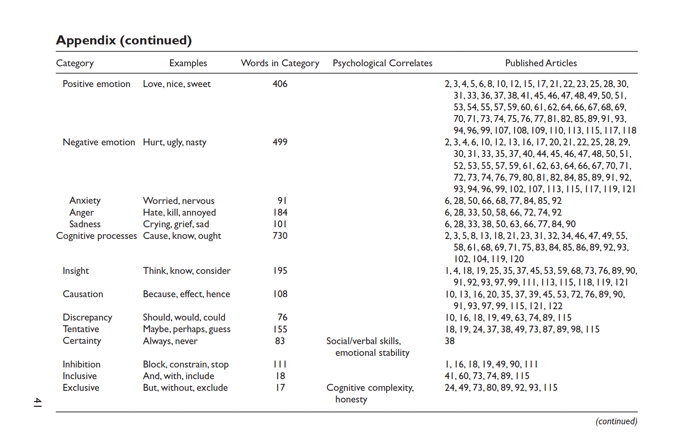
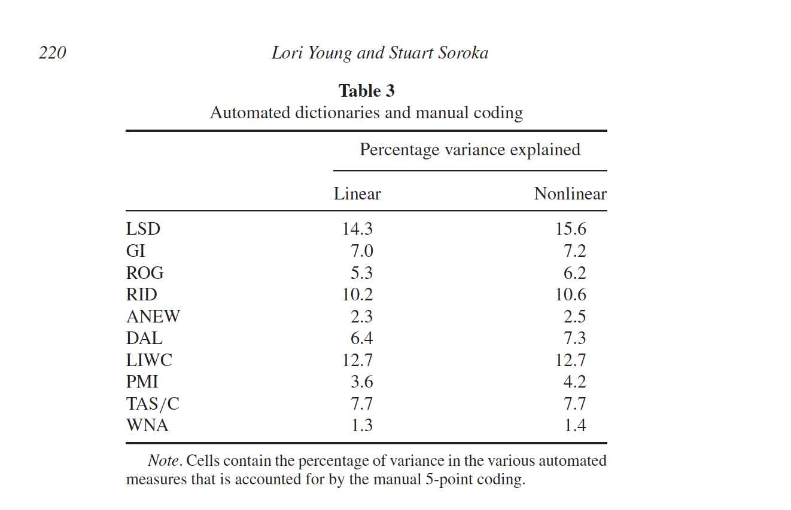
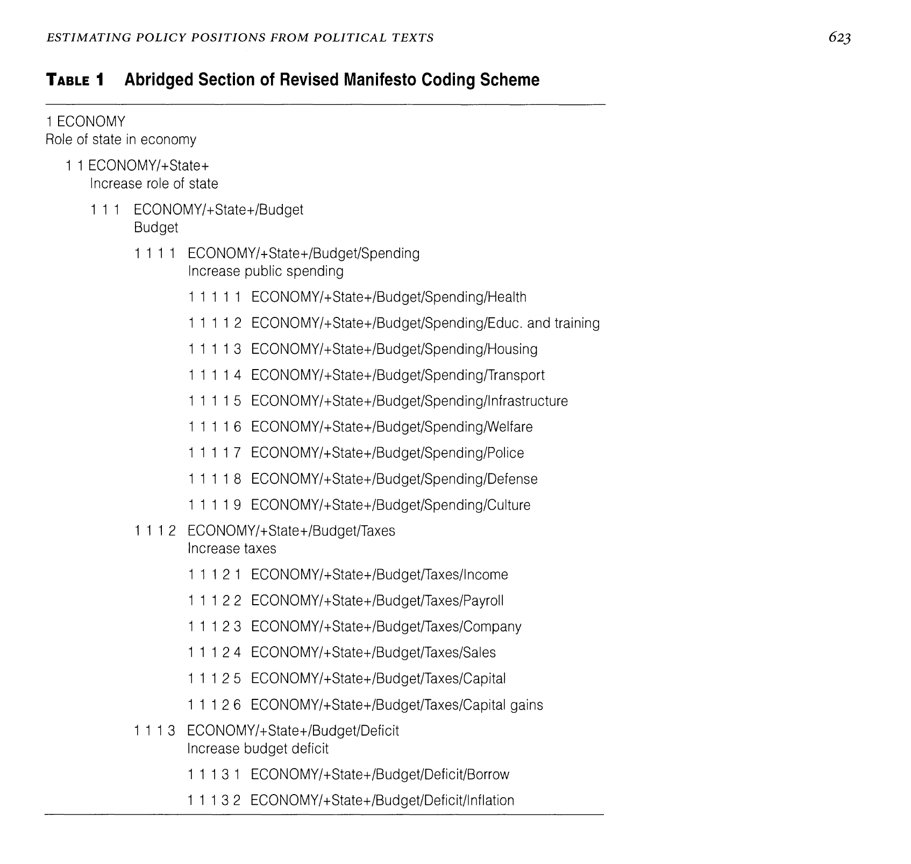
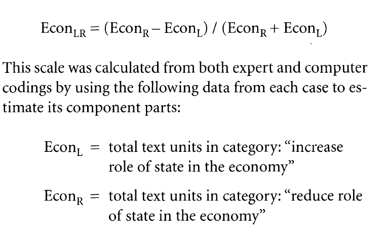
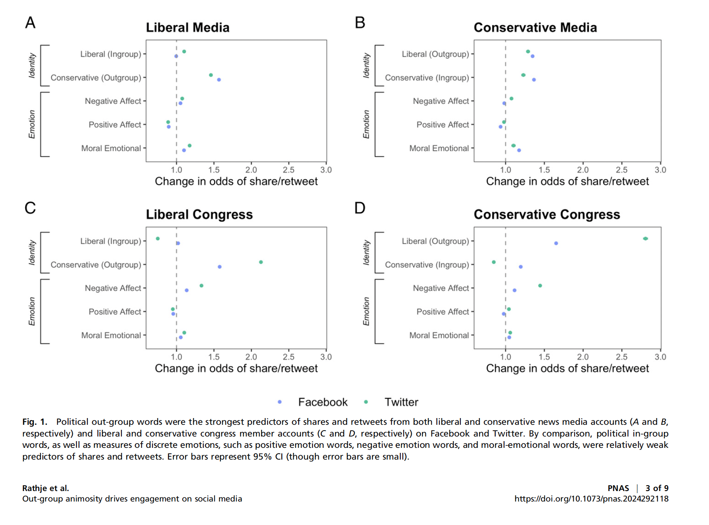
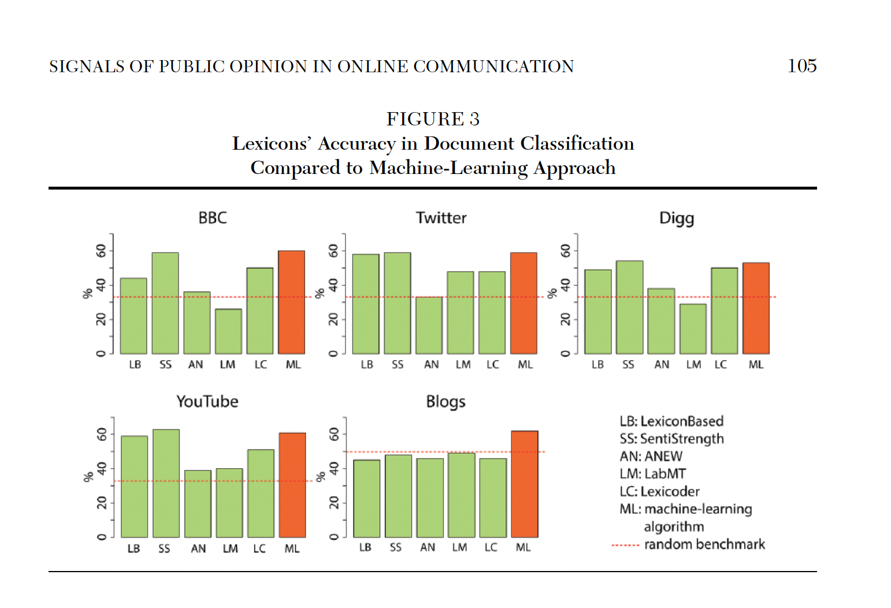
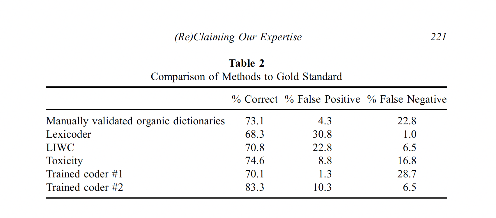
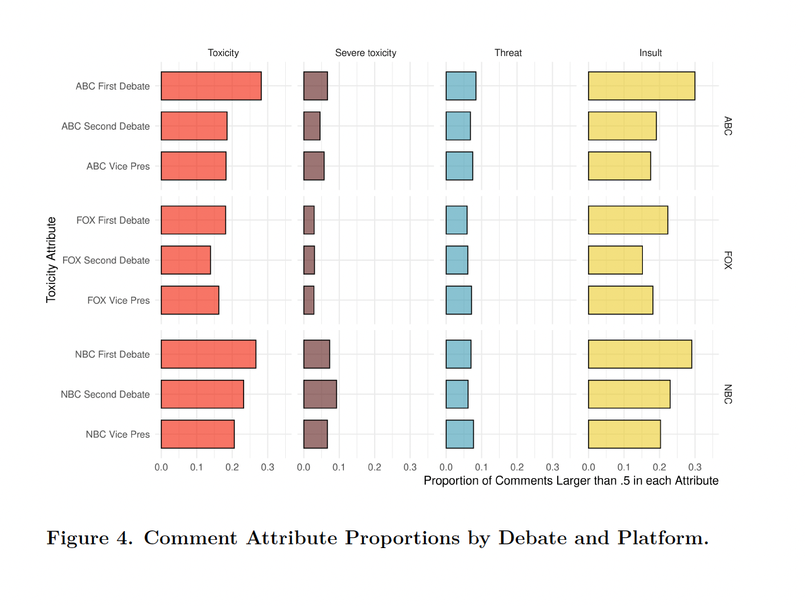

PPOL 6801 - Text as Data - Computational Linguistics
Week 4: Dictionaries and off-the-shelf classifiers
Housekeeping
Your first problem set will be assigned today! Some important information:
You will receive and submit your assignment using Github!
- Github Clasroom: Creates automatically a repo for the assignment. You and I are owner of the repo.
Deadline: EOD next Wednesday, February 14th.
Please use an .RMD/.QMD file to submit your assignment. If you prefer to solve using jupyter, let me know!
Any questions?
Where are we?
After learning how to process and represent text as numbers, we started digging in on how to use text on a research pipeline.
Descriptive inference:
Counting words (Ban’s Paper)
Comparing document similarity using vector space model (text re-use)
Measures of lexical diversity and readability
Plans for today
For the next two weeks, we will talk about Measurement
- Measurement: Map/Measure concepts from theory to data.
Documents pertaining to certain classes and how we can use statistical assumptions to measure these classes
- Dictionary Methods
- Discuss some well-known dictionaries
- Off-the-Shelf Classifiers
- Perspective API
- Hugging Face (only see as a off-the-shelf machines, LMMs later in this course)
- Next week: training our own machine learning models
Connecting Machine Learning with TAD
In the Machine Learning tradition, we are introduced to two core family of models:
Unsupervised Models: learning (hidden or latent) structure in unlabeled data.
- Topic Models to cluster documents and words
Supervised Models: learning relationship between inputs and a labeled set of outputs.
- Sentiment Analysis, classify if a tweet contains misinformation, etc..
In TAD, we mostly use unsupervised techniques for discovery and supervised for measurement of concepts.
Supervised Learning Pipeline for TAD
Step 1: label some examples of the concept of we want to measure
- some tweets are positive, some are neutral and some are negative
Step 2: train a statistical model on these set of label data using the document-feature matrix as input
- choose a model (transformation function) that gives higher out-of-sample accuracy
Step 3: use the classifier - some f(x) - to predict unseen documents.
Step 4: use the measure + metadata|exogenous shocks to learn something new about the world.
- This is where social science happens!
Back to the Future Exercise
Assume you got the delorean to travel back twenty years ago, you want to run a simple sentiment analysis in a corpus of news articles.
Which challenges would you face?
How could you solve it?
Please consider all four steps described before
Dictionaries
Overview of Dictionaries
Use a set of pre-defined words that allow us to classify documents automatically, quickly and accurately.
Instead of optimizing a transformation function using statistical assumption and seen data, in dictionaries we have a pre-assumed recipe for the transformation function.
A dictionary contains:
- a list of words that corresponds to each category
- positive and negative for sentiment
- Sexism, homophobia, xenophobia, racism for hate speech
- a list of words that corresponds to each category
Weights given to each word ~ same for all words or some continuous variation.
More specifically…
We have a set of key words with weights,
e.g. for sentiment analysis: horrible is scored as \(-1\) and beautiful as \(+1\)
the relative rate of occurrence of these terms tells us about the overall tone or category that the document should be placed in.
For document \(i\) and words \(m=1,\ldots, M\) in the dictionary,
\[\text{tone of document $i$}= \sum^M_{m=1} \frac{s_m w_{im}}{N_i}\]
Where:
- \(s_m\) is the score of word \(m\)
- \(w_{im}\) is the number of occurrences of the \(m_{th}\) dictionary word in the document \(i\)
- \(N_i\) is the total number of all dictionary words in the document
Why Dictionaries?
Low cost and computationally efficient ~ if using a dictionary developed and validated by others
A hybrid procedure between qualitative and quantitative classification at the fully automated end of the text analysis spectrum
Dictionary construction involves a lot of contextual interpretation and qualitative judgment
Transparency: no black-box model behind the classification task
Some well-known dictionaries
General Inquirer (Stone et al 1966)
- It combines several dictionaries to make total of 182 categories:
- the “Harvard IV-4” dictionary: psychology, themes, topics
- the “Lasswell” dictionary, five categories based on the social cognition work of Semin and Fiedler
- “self references”, containing mostly pronouns;
- “negatives”, the largest category with 2291 entries
Linquistic Inquiry and Word Count
Created by Pennebaker et al — see http://www.liwc.net
- Large dictionary with around 4,500 words and words steams
- 90 categories
- Categories are organized hierarchically
- All anger words, by definition, will be categorized as negative emotion and overall emotion words.
- Words are in one or more categories
- the word cried is part of five word categories: sadness, negative emotion, overall affect, verb, and past tense verb.
- You can buy it here: http://www.liwc.net/descriptiontable1.php
Heavily used in academia!
VADER: an open-source alternative to LIWC
Valence Aware Dictionary and sEntiment Reasoner:
Tuned for social media text
Capture polarity and intensity
- Sentiment Lexicon: This is a list of known words and their associated sentiment scores.
- Sentiment Intensity Scores: Each word in the lexicon is assigned a score that ranges from -4 (extremely negative) to +4 (extremely positive).
- Five Heuristic-based rules: exclamation points, caps lock, intensifiers, negation, tri-grams
Python and R libraries: https://github.com/cjhutto/vaderSentiment
Article: https://ojs.aaai.org/index.php/ICWSM/article/view/14550/14399
Young & Saroka’s Lexicoder Sentiment Dictionary
Create dictionary specifically for political communication
Combines:
- General Inquirer;
- Roget’s Thesaurus and
- Regressive Imagery Dictionary
Each words pertains to a single class
Plus
- Hand coding
- Keyword in context dos disambiguation
Performance

LSD results assign 74% to the positive category and just 12% to the negative category. Of the 495 articles that are categorized as negative by at least two coders, LSD results assign 53% to the negative category and 32% to the positive category ~ 69% of accuracy
Laver and Garry, 2000
A hierarchical set of categories to distinguish policy domains and policy positions on party manifestos
Five Domains:
- economy
- political system
- social system
- external relations
Lookes for word occurrences within “word strings with an average length of ten words”
Laver and Garry, 2000


Applications
Rathje et. al 2020, PNAS, Out-group animosity

Rathje et. al 2020, PNAS, Out-group animosity
We used the R package quanteda to analyze Twitter and Facebook text. During text preprocessing, we removed punctuation, URLs, and numbers. To classify whether a specific post was referring to a liberal or a conservative, we adapted previously used dictionaries that referred to words associated with liberals or conservatives. Specifically, these dictionaries included 1) a list of the top 100 most famous Democratic and Republican politicians according to YouGov, along with their Twitter handles (or Facebook page names for the Facebook datasets) (e.g., “Trump,” “Pete Buttigieg,” “@realDonaldTrump”); 2) a list of the current Democratic and Republican (but not independent) US Congressional members (532 total) along with their Twitter and Facebook names (e.g., “Amy Klobuchar,” “Tom Cotton”); and 3) a list of about 10 terms associated with Democratic (e.g., “liberal,” “democrat,” or “leftist”) or Republican identity (e.g., “conservative,” “republican,” or “ring-wing”).
Rathje et. al 2020, PNAS, Out-group animosity
We then assigned each tweet a count for words that matched our Republican and Democrat dictionaries (for instance, if a tweet mentioned two words in the “Republican” dictionary, it would receive a score of “2” in that category). We also used previously validated dictionaries that counted the number of positive and negative affect words per post and the number of moral-emotional words per post (LIWC).
Discussion: Advantages and Disadvantages of Dictionaries
Advantages
We already discussed some of the advantages:
low-cost when working with open sourced dictionaries
- relatively easy to build/expand on new dictionaries
bridge qualitative and quantitative
easy to validate
- dictionaries are transparent and reliable.
transfer well across languages.
Disadvantage: Context specific

Source: Gonzalez-Bailon et al
Disadvantage: Performance

Off-the-shelf models: Ventura et. al. 2021.

Off-the-shelf Deep Learning Models
- Definition: Pre-trained models designed for general-purpose classification tasks
- In general those are models built on TONS of data and optimized for a particular task
- Key Features:
- Ready to use
- Low to zero cost
- Deep ML architectures ~ High accuracy
- Can be re-trained for your specific task